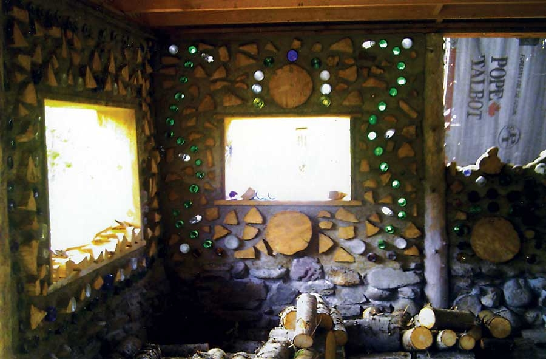

We didn’t plan on going green, but it came naturally for us when we chose to build our house mortgage-free.
We used rocks and logs from our land, which was a huge savings, and the lumber and other necessary materials were purchased locally.
We chose post-and-beam construction, and a floating concrete slab for the foundation. We then took more than 40 logs from our property for cordwood construction and framework. Cordwood wall construction is the process of building with chunks of firewood, laid on their side like bricks and stabilized with mortar. The window frames and top and bottom plates were milled right down the road. The wall thickness is 12 inches. We used attic trusses with an 8:12 pitch ratio for the upstairs to provide extra living space.
The lower 2 feet of the walls are rock and mortar. The rest is cordwood construction with glass bottles added as art elements. The bottles were collected by family and friends.
The best part is that when a cordwood wall is completed, it is finished on the inside as well as the outside, saving a lot of time and cost in finishing. Now, people from all over Idaho and Montana stop by to see our bottle house.
Learn more about cordwood building. - MOTHER
|
 THE JAGIELSKI FAMILY Colored bottles add an artistic touch to a cordwood construction wall. |
|
|